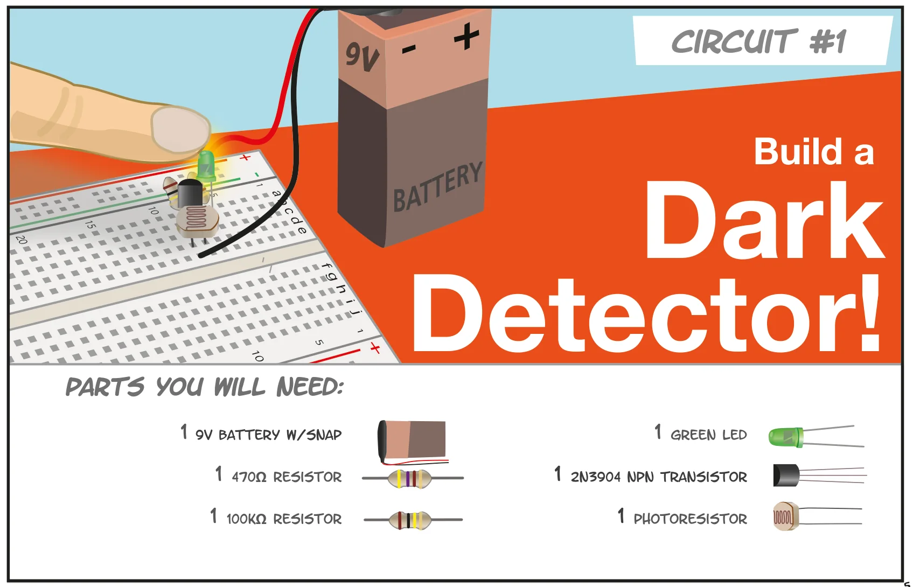
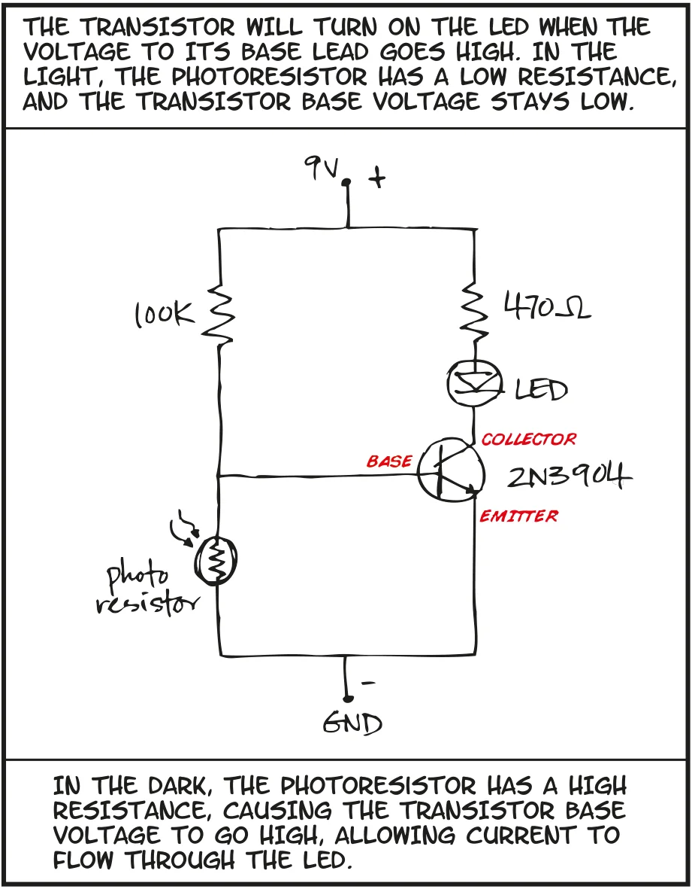
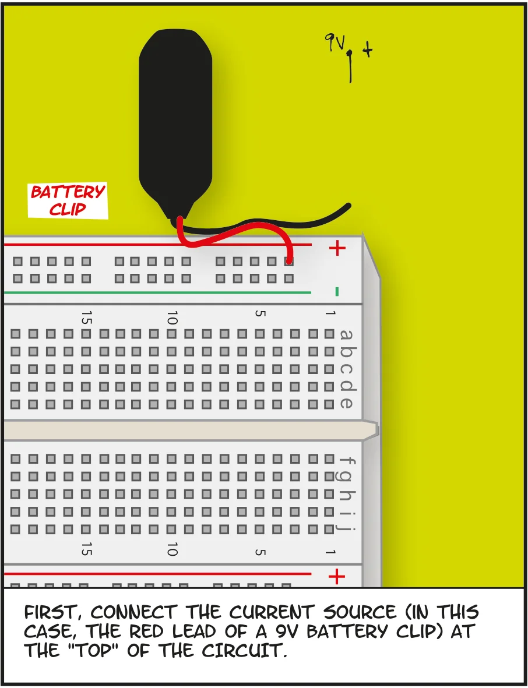
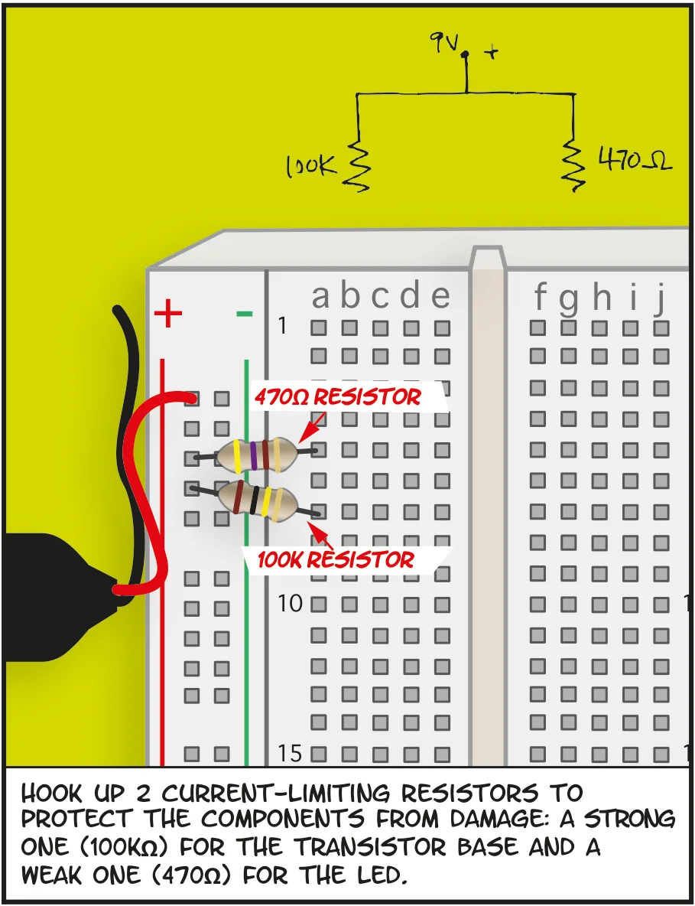
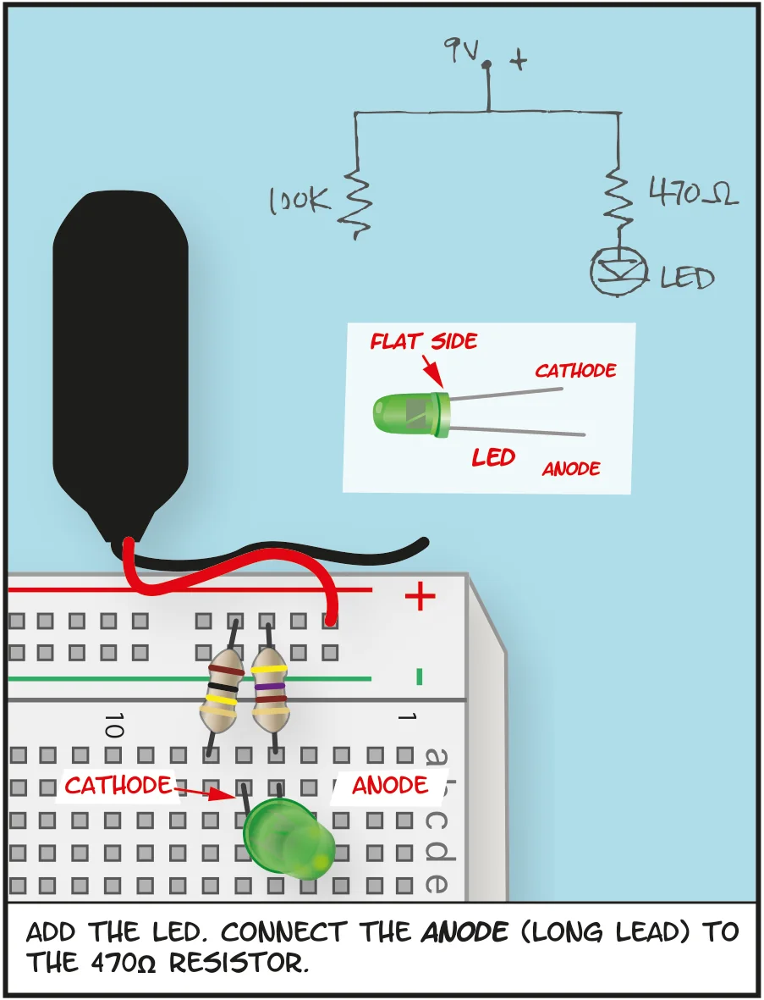
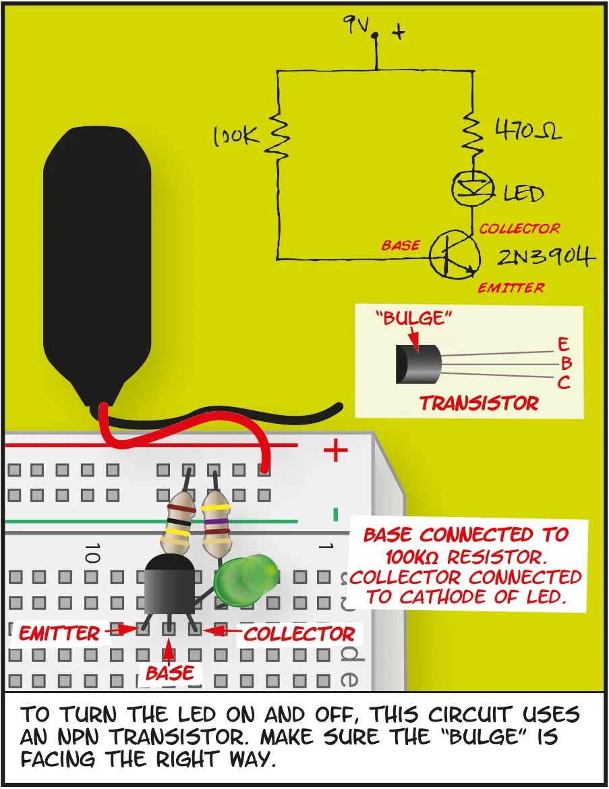
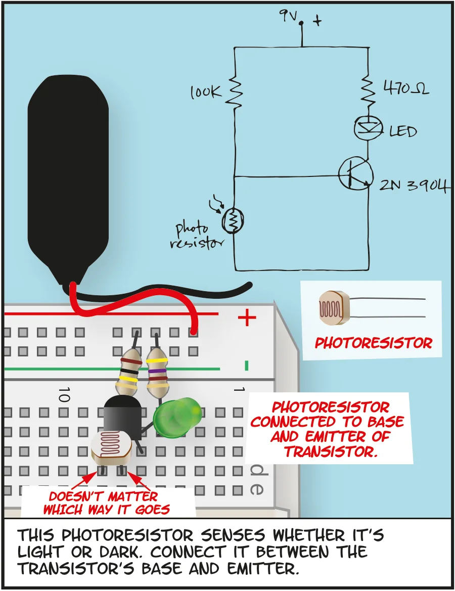
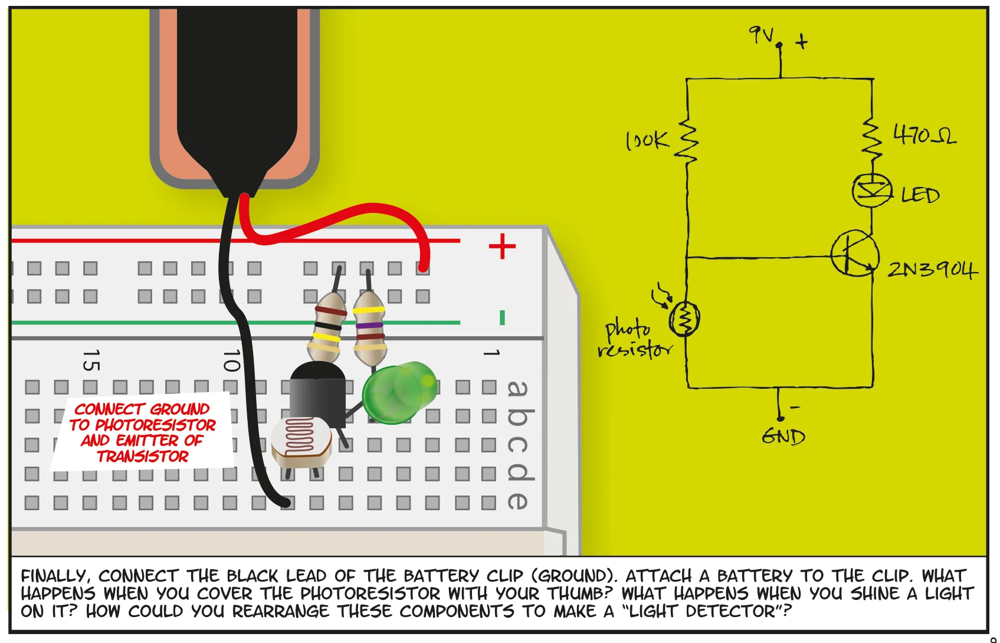

The transistor will turn on the LED when the voltage to its base lead goes high. In the light, the photoresistor has a low resistance, and the transistor base voltage stays low.
In the dark, the photoresistor has a high resistance, causing the transistor base voltage to go high, allowing current to flow through the LED.

First, connect the current source (in this case, the red lead of a 9V battery clip) at the "top" of the circuit.

Hook up 2 current-limiting resistors to protect the components from damage: a strong one (100KΩ) for the transistor base and a weak one (470Ω) for the LED.

Add the LED. Connect the anode (long lead) to the 470Ω resistor.

To turn the LED on and off, this circuit uses an NPN transistor. Make sure the “bulge” is facing the right way.

This photoresistor senses whether it’s light or dark. Connect it between the transistor’s base and emitter.

Finally, connect the black lead of the battery clip (ground). Attach a battery to the clip. What happens when you cover the photoresistor with your thumb? What happens when you shine a light on it? How could you rearrange these components to make a “light detector”?